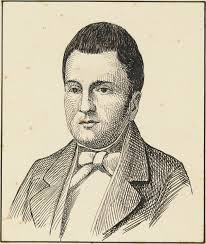
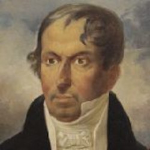
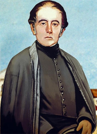

Revolução Pernambucana
A Revolução Pernambucana de 1817 foi um movimento separatista impulsionado pela crise socioeconômica no Nordeste, devido à desvalorização do açúcar e do algodão no mercado externo. A presença da família real portuguesa no Brasil elevou os custos de vida com impostos, provocando revolta entre os pernambucanos. Apesar dos ideais republicanos dos revoltosos e da tomada do governo local, as tropas leais ao governo central derrotaram a insurreição.
Líderes da revolução pernambucana
A Revolução Pernambucana contou com ela diversos líderes que desempenharam papéis cruciais na organização e condução do movimento. Aqui alguns dos principais líderes da revolução pernambucana:
Esses líderes, com suas diversas origens e habilidades, contribuíram significativamente para a Revolução Pernambucana, lutando por um Brasil independente e republicano. Suas ações e sacrifícios deixaram um legado duradouro na história do país.
Logo após a derrota da revolução, eles foram condenados e mortos de forma cruel em praça pública. O capitão José de Barros Lima foi enforcado e teve partes do corpo cortadas e expostas para demonstrar a força da coroa portuguesa e servir de exemplo para quem ousasse desafiá-la.
História dos principais líderes da revolução pernambucana
-
Domingos José Martins
Domingos José Martins foi uma figura central na Revolução Pernambucana de 1817, desempenhando um papel crucial como líder e articulador do movimento. Nascido em 1781 na cidade de Vitória, Espírito Santo, Martins era um comerciante bem-sucedido e estava profundamente influenciado pelos ideais iluministas e republicanos.
 -
José de Barros Lima
José de Barros Lima, conhecido como "Leão Coroado", foi um líder militar crucial na Revolução Pernambucana de 1817. Nascido em Pernambuco, destacou-se como alferes no Regimento de Artilharia. Ele ganhou notoriedade ao assassinar o brigadeiro português Manoel Joaquim Barbosa de Castro no início da revolta, ato que impulsionou o movimento separatista.
Motivado pelos ideais de liberdade e república, Barros Lima ajudou a tomar o controle do governo local. Após a derrota dos revolucionários, ele foi preso e executado, tornando-se um mártir. Seu legado de coragem e resistência é celebrado como exemplo de bravura na luta contra a opressão colonial.
 -
Cruz Cabugá
Domingos Teotônio Jorge, conhecido como Cruz Cabugá, foi um líder importante na Revolução Pernambucana de 1817. Nascido em Pernambuco, ele se destacou na organização do movimento e foi enviado aos Estados Unidos para buscar apoio financeiro e militar para a causa republicana. Influenciado pelos ideais iluministas, Cabugá buscava um Brasil independente e livre da opressão colonial. Apesar da derrota dos revolucionários, ele conseguiu evitar a captura imediata. Cruz Cabugá é lembrado como um herói que simboliza a luta pela independência e pelos ideais republicanos no Brasil.
-
Padre João Ribeiro
Padre João Ribeiro foi um líder influente na Revolução Pernambucana de 1817, destacando-se por sua atuação como articulador político e religioso. Nascido em Pernambuco, ele promoveu os ideais iluministas e republicanos, defendendo a independência do Brasil e a criação de uma república justa e igualitária. Sua liderança foi crucial para a organização do movimento e a mobilização popular. Após a derrota dos revolucionários, ele foi preso e cometeu suicídio na cela. Padre João Ribeiro é lembrado como um mártir e herói da luta pela independência e pelos princípios republicanos no Brasil.

Importância da revolução pernambucana
A Revolução Pernambucana desafiou o poder da coroa portuguesa ao questionar as abusivas cobranças de impostos e destacou a insatisfação dos brasileiros com a presença portuguesa em pontos importantes do comando político, econômico e militar do Brasil. Ao tomar o poder no Recife, os rebeldes mostraram a possibilidade de se formar um governo próximo às exigências das revoltas. A Revolução Pernambucana manteve a tradição da capitania de ser um ponto de ebulição política e social.
Consequências da revolução pernambucana
A revolta em Pernambuco mostrou que os poderes locais eram instáveis quanto às ordens emitidas do Rio de Janeiro. Além disso, reforçou para a coroa portuguesa no Brasil e o Primeiro Reinado, logo após a independência, a necessidade de se criar tropas militares para manter a unidade nacional, dissipar as ideias republicanas e punir severamente os rebeldes.